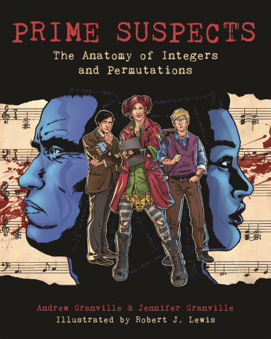

Introduction
Welcome to the August 2019 roundup! Similar to last time I’m going to experiment with, namely documenting anything interesting I come across (articles, lectures, books, papers etc.) and any activities I get up to. This is more for my personal benefit but may also help others.
Interesting Articles
- Came across this exhaustive
BibTeXexample file which will be a really handy reference going forward for \LaTeX documents - The document is written by the Oren Patashnik, the co-creator of BibTeX (😮) and the co-author of the great book (Graham, Knuth, and Patashnik 1994)
Interesting Books
Fiction
- Started reading this fantastic book (Granville, Granville, and Lewis 2019) called the Prime Suspects by Andrew Granville, Jennifer Granville, and Robert J. Lewis (illustrator). Here is a youtube trailer for the book to get you excited!

Key Takeaways
- This is essentially an introduction to analytic number theory disguised as a fast-moving graphic novel murder mystery
- For any mathematics fans (and who isn’t?) there are lots of funny easter eggs to be found in the frame backgrounds
- This a very unique exposition on number theory, a subject in which I have negligible knowledge (like most subjects)
- The pedagogy is gentle and yet exciting emphasizing not just mathematics but the importance of communication of mathematical ideas to the wider public i.e. a meta novel if you like
- I hope to see more books in this mathematical graphic novel genre. The last one I read (and know of) is Logicomix (Doxiadis et al. 2009) which I highly recommend as well for anyone wishing to venture into the mysteries of infinity!
Interesting Interviews
- Really enjoyed this interview with Prof. Noga Alon a leading mathematician specializing in combinatorics, graph theory etc. Fantastic insights into the life of a (leading) theoretical researcher and certainly someone for me to look up to and learn from. I enjoyed the fact that it was so brief but dense as I normally don’t have much time for podcasts. I may check out a few more scientific based interviews from this Career Yoga podcast going forward.
Note: This interview was co-conducted Ms. Narkis Alon, the daughter of Prof. Alon which led to a really personal dynamic!
Key Takeaways
- This 20min interview is really part of a podcast on careers, and the focus here being the lessons/insights learned from a very successful career in theoretical mathematical research from Prof. Alon
- Prof. Alon appears to be extremely organized in all aspects of life, including packing for trips. Was asked specifically not to prepare for this interview 😄
- I’ve paraphrased my summaries below, any transcription errors are mine. Please listen to the original interview.
- Question: What does it mean to be a mathematician?
To mostly think about mathematical problems, there are many mathematical problems that have rich history, many are interesting in their own sense. It means to ask the right questions, think about interesting questions and tell the difference between what is beautiful and what is not beautiful
- Question: What does your day look like?
Many procedural things - teaching, meeting graduate students, reading mathematical papers.
Part of the time I’m just thinking! Sometimes with other people over chalkboard/whiteboard, looking at a piece of paper on the table i.e. trying to do some computations that are relevant, thinking of relationships to the problem. Finding problems that are similar enough.
- Question: It is so difficult to grasp the idea of just thinking! Most of the careers are based on the idea of responding to things. Often when visiting you in Princeton it seems you are in a room staring in the air, in another room people another mathematician is staring in the air, it seems like you are not doing anything!
Right, and indeed in much of time you are not doing anything. Most of the time you are failing and you need to get used to to it Part of the satisfaction is this process is to think about something for a very long time without having an idea. Sometimes you solve something related
- Question: Do you sometimes try to initiate situations that will inspire you to solve problems
You go to conferences, talk to people, read papers etc. Many times you just need to be in a different state of mind e.g. if you forget someone’s name, just thinking about it does not always make you remember, just need to try something else at times. This may explain why you see people staring in the air! Sometimes you can go and take walks.
- Question: When did you know you wanted to be a mathematician?
As a child, before I was 10 years old I knew I was interested in mathematical puzzles. I was good at it and interested in mathematics but didn’t really know what it involved. I always liked that it is objective. I was able to explain a solution to an adult at a party on the puzzle of the Eurovision song contest. The power of convincing someone is really powerful.
- Question: Was the long list of awards you aimed for?
No, it’s nice to get such prizes but never done this with the intent. In every field it is important, but the glory is very limited. This is nice but you don’t do things with this aim in mind
- Question: In one of your discoveries, did you ever feel “this was something I was dreaming on and I accomplished that”
I had a few things where I was very happy. Because I had thought about it for a long time and found something new. Don’t think I had a specific time where I sat back and said this is the best discovery of their life. One should always think that the best discoveries are ahead of them.
- Question: What do mathematicians do after leaving research?
Some scientists go into scientific management. Some go into industry, but this is rare. As long as what I do is what I find interesting and challenging, and what I do is not as good as my best results I would still keep doing this.
- Question: Does being a grandfather and becoming older change your priorities and motivation?
Yes, in general you realize you want to spend time with family, children, and grandchildren. I don’t think it comes instead of science. I hope to keep doing good work and spend time with family.
Personal Blogging
Besides this post 😄 the main things I got up to on the personal blogging front were:
- Updating the distill blog settings, with a detailed step-by-step guide
- Wrote another fun blogpost on using the
tidyverseto reproduce a plot on the survivorship of the Titanic. Always so cool to be able to reproduce such famous plots using modern tools.
Concluding Thoughts
Overall August 2019 was the end of summer and the start of a new year of graduate school - yay!
Please feel free to leave a comment if you found any useful articles, lectures, books, papers etc which I may find interesting.
References
Reuse
Citation
@online{shrotriya2019,
author = {Shrotriya, Shamindra},
title = {Shamindra’s {August} 2019 {Roundup}},
date = {2019-08-31},
url = {https://www.shamindras.com/posts/2019-09-01-shrotriya2019august19roundup/},
langid = {en}
}